Visão geral do jogo
O jogador assume o comando de um clube (sorteado ou escolhido entre os times da última divisão) e avança a carreira rodada a rodada. Cada "rodada" do calendário é ou uma jornada do campeonato, ou uma fase da Taça — nunca as duas ao mesmo tempo. O ciclo se repete:
O loop de uma rodada
- Escalar o time (manual, "Automático" ou "Melhores").
- Jogar a rodada: a IA já resolveu os outros jogos da rodada; a partida do jogador é simulada minuto a minuto, com opção de pausar, ajustar velocidade e usar substituições.
- Pós-jogo: os jogadores evoluem (ou regridem) conforme o resultado, a moral do elenco muda, a bilheteria e os salários são lançados no caixa, contratos perto do fim disparam pedidos de renovação, e o mercado de leilões pendentes é resolvido.
- Gerenciar entre rodadas: negociar jogadores, ajustar finanças, responder pedidos de renovação — tudo em tempo "de escritório", sem pressa.
Depois de todas as rodadas da temporada (campeonato + Taça), o jogo processa a virada de temporada: acesso e rebaixamento, premiações, evolução por idade e um novo calendário é sorteado.
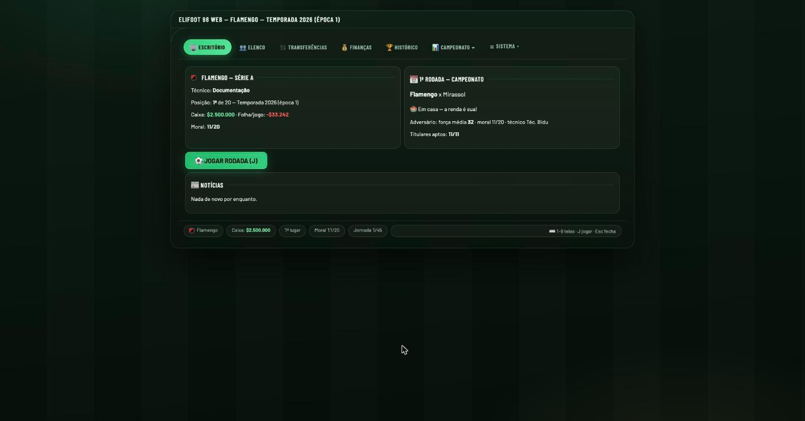
Criação do clube e do elenco
Ao começar uma carreira, o motor gera as quatro divisões do zero: 20 clubes por divisão, 80 no total, cada um com um elenco de 18 jogadores construído estatisticamente a partir do nível da divisão em que nasce.
base = 2 + arredondar(nível × 2.2)força = clamp(1, 50, base + aleatório(-6, +6))se posição = Goleiro: força -= 2
O nível depende da divisão do clube (mais alto na Série A, mais baixo na
Série D), então times de divisões melhores nascem com elencos mais fortes em média — mas
sempre com uma variação de ±6 pontos para não ficarem todos idênticos.
Um clube de nível 15 (Série A) gera jogadores de linha com base = 2 + 33 = 35, então força tipicamente entre 29 e 41. Um clube de nível 4 (Série D) gera base = 2 + 9 = 11, força tipicamente entre 5 e 17 — times fracos de verdade, não apenas "levemente piores".
O elenco padrão tem 2 goleiros, 6 zagueiros/laterais, 6 meio-campistas e 4 atacantes (18 jogadores). Times com "estrelas" pré-definidas (jogadores nomeados com força fixa) preenchem essas posições primeiro; o resto é sorteado. Cerca de 8% dos jogadores de reposição nascem estrangeiros (de uma lista de países sul-americanos), o resto nasce brasileiro.
Comportamento (traço de personalidade)
Cada jogador recebe um dos 6 comportamentos, sorteado por peso — zagueiros têm mais chance de nascer "sarrafeiros" (agressivos) que os demais:
| Comportamento | Peso (D) | Peso (G/M/A) |
|---|---|---|
| Sarrafeiro | 12 | 5 |
| Rústico | 18 | 8 |
| Cadenciado | 22 | 12 |
| Neutro | 25 | 20 |
| Cavalheiro | 10 | 25 |
| Fair play | 13 | 30 |
O comportamento afeta a chance de cometer falta/cartão em campo (ver motor de partida) e também o valor de mercado do jogador.
Craques (★)
Cerca de 30% dos meias e atacantes nascem marcados como "craque". Um craque recebe:
- +25% de eficácia na finalização (ajustável em Calibração)
- +25–30% de eficácia na cobrança de pênalti
- +25% no valor de mercado
Jogadores "estrela" nomeados no elenco inicial de um clube (com nome próprio) só viram craque se a força inicial for ≥ 42.
Cada clube nasce com um caixa inicial escalonado por divisão
($2.500.000 na Série A até $120.000 na Série D), um preço de
ingresso padrão e uma capacidade de estádio própria. Além dos 80 clubes, o motor gera um
pool de 40 agentes livres (10 por divisão) sem contrato com clube nenhum, disponíveis
para contratação a qualquer momento.
Jogadores: força, evolução e moral
Salário pretendido
salário = (força × 15 + força²) × fator_comportamento × inflação
Comportamentos mais "difíceis" (Sarrafeiro, Rústico) pedem salários mais altos que Cavalheiro/Fair play, na mesma força — o fator de comportamento também é o mesmo multiplicador usado no valor de mercado (ver Mercado).
Evolução pós-jogo
Depois de cada partida, todo jogador que entrou em campo (titular ou substituto) pode subir ou cair 1 ponto de força, ancorado à média de força dos titulares do time:
- Vitória: jogador sobe 1 ponto (se a força atual não estiver 5+ pontos acima da média do time).
- Empate: 50% de chance de subir 1 ponto, 50% de não mudar.
- Derrota: 50% de chance de cair 1 ponto (se não estiver 5+ pontos abaixo da média), 50% de não mudar.
- Goleiros evoluem mais devagar: mesmo "aprovados" para subir, há 50% de chance extra de não acontecer nada.
Esse teto/piso relativo à média do time (±5) evita que um único craque dispare indefinidamente enquanto o resto do elenco estagna.
Moral do elenco (0–20)
A moral não afeta diretamente a força dos jogadores em campo, mas alimenta o acompanhamento de clima do elenco e o critério de demissão do técnico (ver Carreira do treinador).
Contratos e pedidos de renovação
Todo jogador tem um contador de contractGames (jogos restantes de contrato),
que decresce 1 a cada partida disputada pelo clube. Ao chegar a zero, o motor dispara um
pedido de renovação: o jogador exige o salário de mercado atual. O técnico humano
pode aceitar (contrato renovado por mais 30 jogos) ou recusar — nesse caso o jogador vai
automaticamente para leilão a 60% do valor de mercado. Se o clube não tiver como vender
aquele jogador sem ficar abaixo do mínimo de elenco, a renovação é obrigatória.
Escalação e formações
O jogo oferece 12 formações táticas clássicas (de 3-3-4 a 6-4-0), mais uma variante extrema 5-0-5 sem meio-campo — arriscada, mas maximiza ataque e defesa ao custo de não ter ninguém no meio.
🤖 Automático
Testa as 12 formações possíveis com o elenco disponível e escolhe a que resulta na maior soma total de força entre os 11 titulares.
⭐ Melhores
Mantém a formação atual (D-M-A) e simplesmente escala, em cada posição, os jogadores disponíveis com maior força — sem trocar o esquema tático.
Jogadores suspensos ou lesionados nunca entram no cálculo de escalação automática. Times controlados por IA (inclusive quando o técnico humano está de férias) sempre escalam no modo Automático antes de cada rodada.
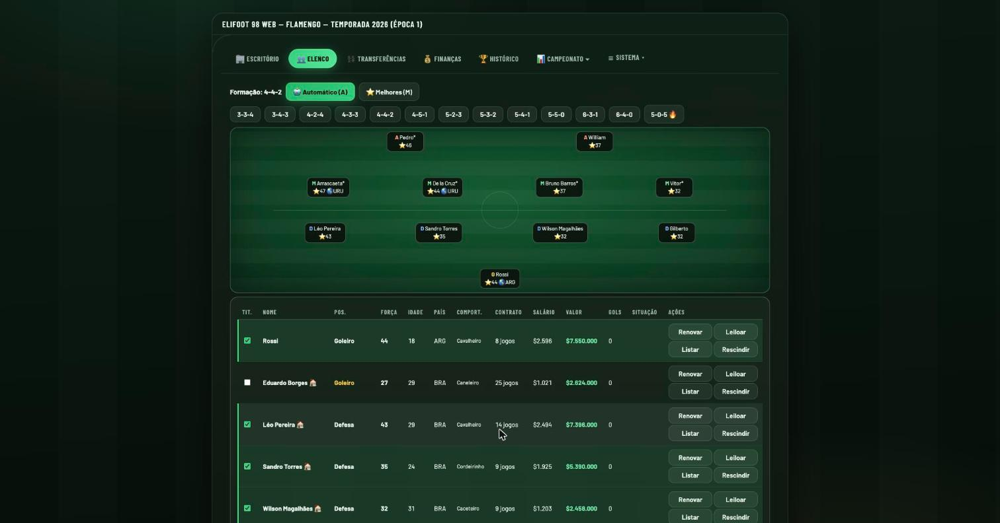
Motor de partida: simulação minuto a minuto
Cada partida é simulada minuto a minuto (90 minutos), gerando eventos em tempo real: chances de gol, faltas, cartões, lesões e substituições. Nada é pré-calculado — o resultado emerge da soma de centenas de sorteios independentes.
1. Força de ataque e defesa por lado
ataque = Σ(força_atacantes × 2) + Σ(força_meias × 2) / 2 + bônus_nacionalidade + (ajuda_árbitro - 10)defesa = Σ(força_zagueiros × 2) + Σ(força_meias × 2) / 2 + força_goleiro × 2 + bônus_nacionalidade + (ajuda_árbitro - 10)
Note que a força de cada titular entra dobrada no setor em que atua, e os meio-campistas contribuem em ambos os setores, mas só com metade do peso em cada um — daí porque uma formação 5-0-5 (sem meio-campo) ainda funciona: ela troca a contribuição diluída dos meias por zagueiros e atacantes de força cheia.
bônus_nacionalidade = +3 pontos por titular cuja nacionalidade seja igual
à do clube (incentivo a montar elencos "de casa"). ajuda_árbitro é um valor
de 0 a 20 sorteado por árbitro e por lado do jogo (ver seção de árbitros abaixo), com 10
sendo neutro.
Num 4-4-2 com meias de força 40, cada meia contribui apenas 40 × 2 / 2 = 40
pontos por setor (ataque e defesa, juntos 80 no total dividido). Num 5-0-5, aqueles
"espaços" de meio-campo viram zagueiros e atacantes extras contribuindo com
força × 2 cheios em um único setor — na prática, mais força bruta
concentrada, ao custo de perder o equilíbrio tático que o meio-campo normalmente
garante contra times menos extremados.
2. Mando de campo: quem cria mais chances
chance_casa = aleatório(6000) < ataque_casachance_fora = aleatório(7000) < ataque_fora(em campo neutro, ambos usam aleatório(6500))
O time da casa sorteia contra um divisor menor (6000) que o visitante (7000) — um divisor menor significa mais chance de o sorteio "passar" o teste, ou seja, o mandante tem vantagem estrutural de gerar mais oportunidades por minuto, simulando o fator casa. Esses três divisores (casa/fora/neutro) são ajustáveis no painel de calibração.
Gerador anti-goleada
Para evitar placares absurdos quando um time é muito mais fraco, cada minuto também
roda um segundo sorteio independente que fica mais generoso quanto menos chances
(e gols) aquele time já teve no jogo: aleatório(90) < limite_anti_goleada -
(chutes + gols do time). Um terceiro sorteio residual (1 em 180 para a casa, 1 em
270 para o visitante) garante que mesmo o time mais fraco tenha alguma chance pura de
sorte a cada minuto.
3. Da chance ao chute: o duelo individual
Quando uma chance é gerada, o motor sorteia quem finaliza (ponderado por posição — atacantes têm peso 3, meias peso 2, zagueiros peso 1, multiplicado pela força do jogador, e craques têm peso ×1.5) e quem tenta desarmar do lado defensor (pesos invertidos: zagueiro 3, meia 2, atacante 1). O desarme só acontece se:
aleatório(força_defensor) > aleatório(força_atacante)
Se o defensor "vence" esse sorteio, a chance morre ali — vira uma jogada desarmada, sem gerar evento visível. Só se o atacante sobrevive ao duelo é que o chute de fato acontece.
4. O chute a gol
bônus_craque = força_finalizador × (bônus_craque% / 100) — se for craqueP(gol) = fator_conversão × (força_finalizador + bônus_craque) / (força_finalizador + força_goleiro)
Ou seja: quanto mais forte o finalizador em relação ao goleiro
adversário, maior a chance de gol — uma razão de forças, não uma soma. O
fator_conversão (padrão 0.42) escala a curva inteira e é ajustável na
Calibração.
Se não é gol, o motor sorteia o desfecho da chance perdida:
| Resultado | Probabilidade condicional |
|---|---|
| 🧤 Goleiro defende | 40% |
| Chuta para fora | 20% |
| Chuta por cima | 20% |
| 😱 Na trave (poste) | 10% |
| 😱 No travessão (barra) | 10% |
5. Faltas, cartões e pênaltis
aleatório(100) < % chance de falta(padrão 8%) — se falha, nada acontece nesse minuto.- Se há falta, sorteia-se o infrator entre os titulares do time defensor, ponderado pelo peso de cartão do comportamento (times 100% fair play nunca são sorteados como infratores puníveis).
aleatório(100) < % fração que vira cartão(padrão 9%): decide cartão. Se o infrator já tinha amarelo na partida, é segundo amarelo → vermelho. Senão, sorteia-se entre amarelo ealeatório(100) < % vermelho direto(padrão 4%) para expulsão direta. Três amarelos em partidas diferentes também rendem suspensão automática.- Se não virou cartão, ainda pode virar pênalti:
% fração que vira pênalti(padrão 2%) sobre as faltas restantes. O técnico humano escolhe quem cobra; a IA sempre escolhe o jogador de maior força efetiva de meio ou ataque.
eficácia = força_cobrador × (1.3 se craque) × (1.0 se meia/atacante, senão 0.7)P(gol) = clamp(0.4, 0.95, fator_pênalti × eficácia / (eficácia + força_goleiro × 0.4))
6. Lesões e substituições
A cada minuto e por time, há uma chance de lesão configurável (padrão 3 em 1000) sobre um titular sorteado ao acaso. A lesão tira o jogador de campo imediatamente, marca quantos jogos ele ficará fora (1 a 6) e pode reduzir sua força em até 3 pontos permanentemente. Times de IA substituem automaticamente pelo melhor jogador disponível na mesma posição no banco; o técnico humano escolhe manualmente quem entra. Um jogador que saiu por substituição normal não pode voltar a campo na mesma partida — a mesma regra do futebol real.
7. Árbitros
Cada partida sorteia um árbitro de um quadro fixo, cada um com um nível de "ajuda" a favor de cada lado (0 a 20, entrando na fórmula de força de ataque/defesa como mostrado acima). Isso simula, de forma simplificada, arbitragens mais ou menos rigorosas ou mais ou menos favoráveis a um dos lados.
8. Disputa por pênaltis
Quando a Taça empata após os 90 minutos, o motor roda uma disputa por pênaltis: 5 cobranças alternadas (ou até a matemática decidir antes, se a diferença já for irreversível), seguidas de morte súbita se ainda houver empate.
eficácia = força_cobrador × (1.3 se craque)P(gol) = clamp(0.4, 0.92, fator_shootout × eficácia / (eficácia + força_goleiro × 0.5))
9. Público e renda do jogo
força_média = (força_média_titulares_casa + força_média_titulares_visitante) / 2demanda_base = (2000 + 900 × força_média) × fator_divisãofator_preço = clamp(0.25, 1.3, preço_justo / preço_do_ingresso)público = clamp(500, capacidade_do_estádio, demanda_base × fator_preço × fator_torcida × aleatório(85%–115%))
O fator de divisão penaliza divisões inferiores (1.0 na Série A, caindo até 0.3 na D). O "preço justo" cresce com a força média do confronto e com a inflação acumulada — cobrar acima do preço justo reduz a demanda; cobrar abaixo, aumenta (até o limite da capacidade do estádio).
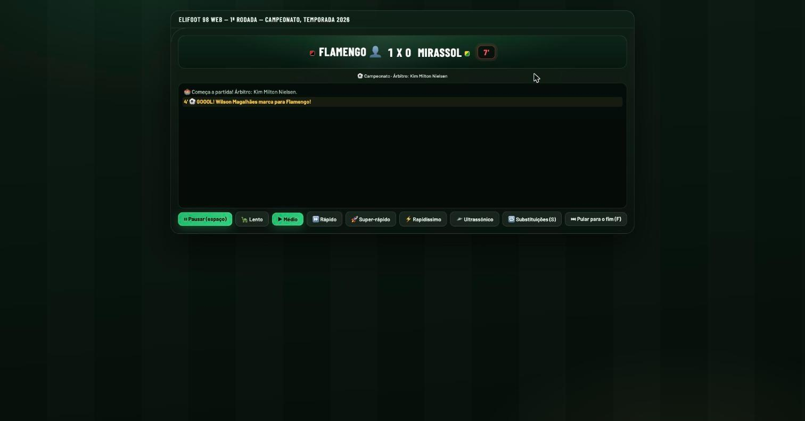
Mercado de transferências e leilões
Valor de mercado
base = força² × 4000 × fator_comportamentose comprador estrangeiro em relação ao jogador: base ×= 0.75se craque: base ×= 1.25fator_idade = 1.3 (≤21 anos) · 1.0 (22–29) · 0.75 (30–32) · 0.5 (≥33)valor = máximo(1000, arredondar(base × fator_idade × inflação))
O valor cresce com o quadrado da força — um jogador de força 40 vale 4× mais que um de força 20 (na mesma idade e comportamento), não o dobro. Jogadores jovens (≤21) custam um prêmio de 30% sobre o valor "puro"; veteranos (33+) valem metade.
Oferta direta
O jogador humano pode oferecer um valor direto por qualquer jogador de outro clube. O vendedor aceita se a oferta superar um piso, que depende de o jogador estar listado à venda ou não:
Leilões
Colocar um jogador em leilão define um lance mínimo; o leilão fica aberto por uma rodada e resolve no início da rodada seguinte, somando lances humanos e lances automáticos de clubes de IA. Um clube de IA oferece lance quando precisa reforçar aquela posição (elenco com menos de 20 jogadores, ou menos de 2 na mesma posição) e o jogador tem força pelo menos igual à média do próprio elenco menos 3 pontos — o lance sorteado varia entre o valor de mercado e até 41% acima dele, limitado a 60% do caixa disponível do clube.
Quando um jogador é comprado ou tem o contrato renovado, ele fica bloqueado para revenda até a próxima temporada — evita comprar e revender o mesmo jogador em sequência na mesma janela.
Limites de elenco
Um jogador só conta como "estrangeiro" se sua nacionalidade for diferente da do clube e nenhum acordo de livre circulação cobrir os dois países ao mesmo tempo — o motor reconhece dois desses acordos (um bloco de livre circulação entre países europeus e uma comunidade de países de língua portuguesa), inspirados em regras reais de circulação de atletas entre nações com laços históricos ou econômicos.
Venda automática por dívida
Se o caixa do clube ficar negativo, o motor coloca automaticamente em leilão (sem lance mínimo) o jogador de maior valor entre os que têm contrato perto do fim e podem ser vendidos sem violar o mínimo de elenco — um por rodada, até o caixa se recuperar.
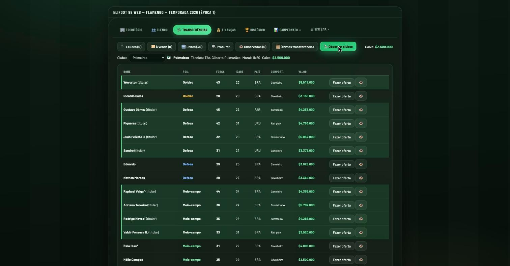
Finanças
Cada partida gera um lançamento contábil completo: bilheteria (se o clube for mandante), folha salarial, juros de empréstimo e qualquer transferência do dia. Tudo isso alimenta a Demonstração de Resultado (DRE) da temporada.
Empréstimo bancário
- Empréstimos são tomados em parcelas fixas de
$100.000. - Juros de 5% do capital em dívida, cobrados a cada partida (não por ano) — um empréstimo alto e esquecido corrói o caixa rapidamente.
- O limite de crédito depende da "confiança do banco": escala com a última bilheteria registrada (ou com o tamanho da torcida, na ausência de histórico) e cai pela metade se o clube já estiver no vermelho.
Ampliação de estádio
Cada obra adiciona 5.000 lugares à capacidade, por um custo de $500.000
corrigido pela inflação acumulada — as novas bancadas já valem a partir do próximo jogo em
casa.
Inflação
A cada virada de temporada, a inflação acumulada sobe 5%, reajustando salários pretendidos, valores de mercado, preços de obra e premiações — o dinheiro de temporadas futuras vale um pouco menos em termos reais, empurrando o jogador a negociar e investir em vez de guardar caixa parado indefinidamente.
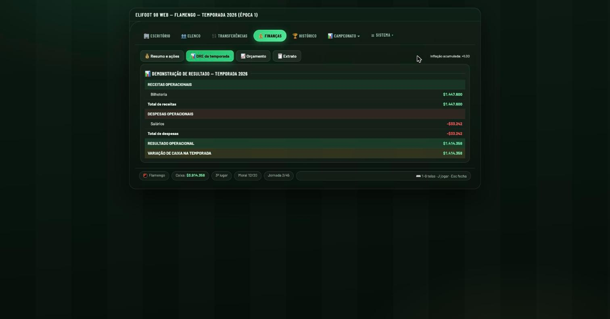
Competições: Campeonato e Taça
Campeonato
Pontos corridos dentro de cada uma das 4 divisões (20 clubes cada, turno e returno). Ao fim da temporada, os 4 primeiros de cada divisão (exceto a Série A) sobem, e os 4 últimos de cada divisão (exceto a Série D) descem — trocando de lugar entre as divisões vizinhas.
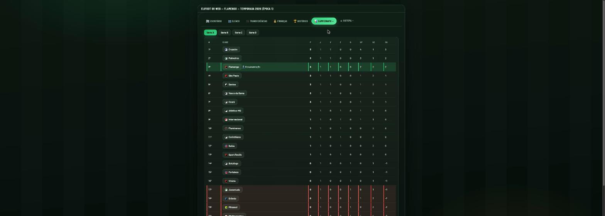
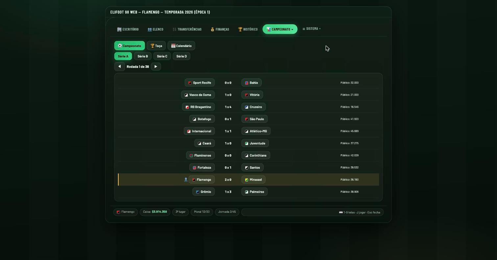
Taça
Torneio eliminatório de jogo único envolvendo todas as equipes das quatro divisões ao mesmo tempo — times de divisões diferentes podem se enfrentar já nas primeiras fases. Quando o número de participantes não é uma potência de 2, uma pré-eliminatória reduz o chaveamento ao tamanho certo antes das fases nomeadas (oitavas, quartas, semifinais, final). Empates em 90 minutos vão direto para disputa por pênaltis — não há prorrogação. A final é sempre em campo neutro, com a renda da bilheteria dividida igualmente entre os dois finalistas.
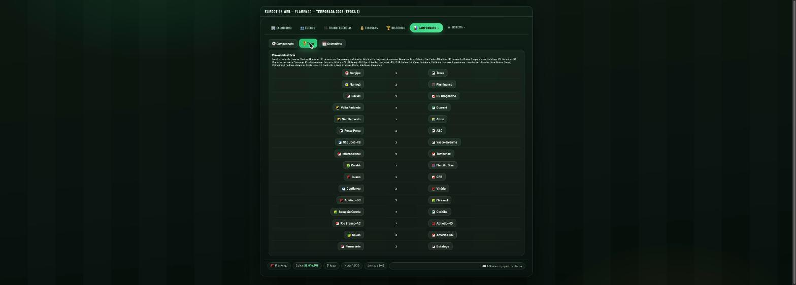
Premiações
Virada de temporada
Ao final de todas as rodadas, o motor processa de uma vez: apuração de campeões, acesso/rebaixamento, premiações, envelhecimento do elenco e um calendário totalmente novo para a próxima temporada.
- Idade +1.
- Estatísticas da temporada zeram (gols, cartões, suspensões, lesões).
- 35 anos ou mais: 50% de chance de aposentadoria (sai do elenco definitivamente).
- 31 a 34 anos: 40% de chance de perder 1 a 3 pontos de força.
- 23 anos ou menos: 50% de chance de ganhar 1 a 2 pontos de força.
- Salário reajustado em +5% (acompanhando a inflação anual).
Clubes que ficam com menos de 14 jogadores após as aposentadorias promovem jovens da base automaticamente para preencher o elenco. Cerca de metade dos agentes livres não contratados na temporada são removidos do mercado (para dar espaço a uma nova geração), e um novo chaveamento de Taça e tabela de campeonato são sorteados do zero.
Carreira do treinador
Pontuação no ranking de treinadores
O ranking geral de treinadores ordena primeiro por número de campeonatos vencidos, depois taças, depois pontos acumulados.
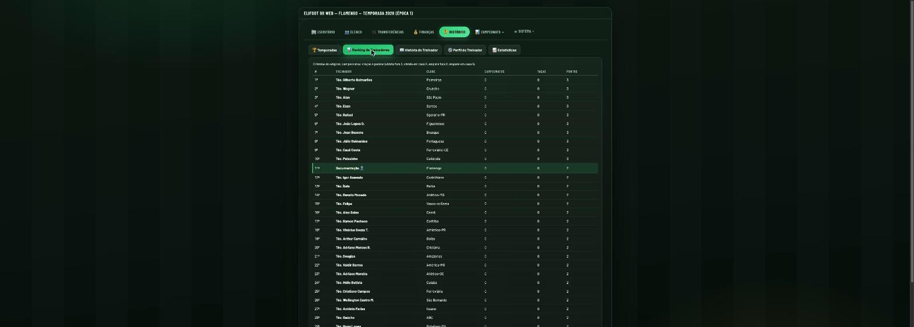
Demissão
Um técnico é demitido automaticamente se:
- o clube sofrer 5 derrotas consecutivas, ou
- o caixa ficar abaixo de −3× a folha salarial por 3 rodadas seguidas.
Quando um técnico humano é demitido, a IA assume o clube e o jogador pode receber um convite de outro clube que também tenha ficado sem técnico — priorizando o candidato desempregado com melhor currículo (campeonatos, taças, pontos de ranking) ou, na falta de um, oferecendo a um técnico já empregado em divisão inferior.
Modo férias
O jogador pode colocar o próprio clube "de férias": a partir daí, a IA assume as decisões de escalação, pedidos de renovação e política de leilão daquele clube, sem removê-lo do controle do jogador — útil para pausar sem perder o cargo.
Estatísticas e calibração do motor
Todo o "sentimento" do motor de partida — frequência de gols, cartões, pênaltis e lesões — vem de 14 constantes numéricas centralizadas, e o jogo expõe um painel para o jogador ajustar cada uma delas ao próprio gosto, sem precisar editar código.
| Parâmetro | Padrão | Efeito |
|---|---|---|
| Vantagem de mando | 6000 | Menor = mais chances de ataque em casa |
| Chances do visitante | 7000 | Menor = mais chances de ataque fora |
| Chances em campo neutro | 6500 | Usado na final da Taça |
| Anti-goleada | 10 | Maior = jogos mais equilibrados |
| Conversão de gol | 0.42 | Maior = mais gols por jogo |
| Bônus do craque | 25% | Vantagem extra na finalização e pênalti |
| Chance de falta | 8% | Por minuto, por time |
| Faltas que viram cartão | 9% | Menor = menos cartões |
| Vermelho direto | 4% | Fração dos cartões que são expulsão direta |
| Faltas que viram pênalti | 2% | Menor = menos pênaltis |
| Chance de lesão | 3‰ | Por minuto, por time |
| Substituições máximas | 3 | Por time, por partida |
| Conversão de pênalti | 0.90 | Em jogo |
| Conversão na disputa | 0.78 | Desempate da Taça |
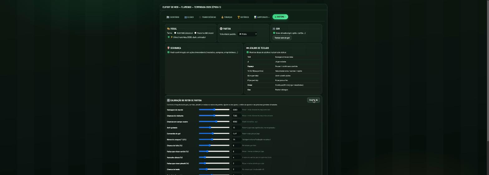
Para validar o efeito dessas mudanças na prática, o jogo mantém um painel de estatísticas agregadas de toda a carreira: gols por jogo, % de vitórias em casa/fora/empate, cartões e pênaltis por jogo, taxa de conversão de pênalti e lesões por jogo — permitindo comparar o comportamento real do motor contra os números configurados.
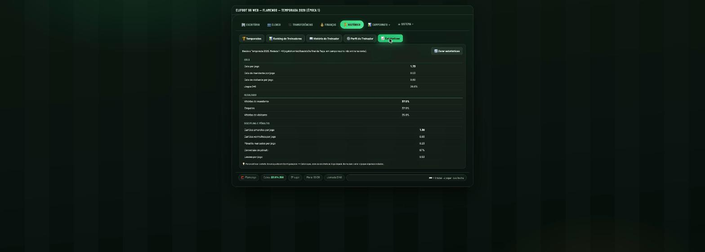
Interface
- 3 temas visuais: um retrô (inspirado nos gerenciadores de futebol clássicos dos anos 90), um moderno claro e um "Ultra" escuro e animado para partidas.
- 6 velocidades de simulação, de Lento a Ultrassônico, além de pular direto para o fim do jogo.
- Atalhos de teclado completos para navegar entre telas, jogar a rodada, pausar, trocar velocidade e abrir substituições sem tirar as mãos do teclado.
- Salvamento automático no armazenamento local do navegador — a carreira continua de onde parou, sem conta ou servidor.
- Confirmações antes de ações irreversíveis (rescisões, leilões, empréstimos) para evitar cliques acidentais que custem caro.